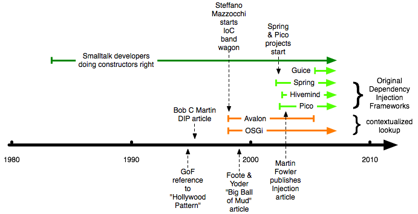

Here is some of the history of the pattern or principle known as Inversion of Control (IoC). There is some confusion online as to whether IoC has been renamed Dependency Injection (DI). This is not the case, DI concerns just one aspect of IoC - component assembly. The other two are configuration and lifecycle.
See also the comparisons page.
Inversion of Control, as a term, was popularised in 1998 by Stefano Mazzocchi as consequence of trying to engineer a 'Java Apache Server Framework' for the growing set of server side Java components and tools at Apache. Sun were just starting to protect the word Java when used for branding/naming of software and computing functions, so Apache had to look for alternative names. Avalon was chosen as a project name (queue images of Arthurian legend).
To the Avalon team, it was clear that components receiving various aspects of component assembly, configuration and lifecycle was a superior design to those components going at getting the same themselves.
It is important to point out that The Open Services Gateway (OSGi) initiative was also started around the same time as the Avalon framework and was similar to a degree. It was born in Europe and specified/controlled by a foundation formed around it.
Latterly this type of IoC has been given a new name - Contextualized Dependency Lookup.
Avalon was cancelled as an Apache project in 2004, by the Apache Software Foundation.
Joe Walnes, Mike Cannon Brookes and others found themselves writing XWork and WebWork2 to support their forthcoming book, Java Open Source Programming. Joe pointed out that the concepts were very much like those from IoC/Avalon that Paul had been trying to convince Joe to adopt for a couple of years, but that dependencies were passed into the component via setters. The need for those dependencies was declared in some accompanying XML.
Paul who worked with Joe at an energy trading company in London, suggested this was a "second type" of Inversion of Control. Type two IoC, as a term, has been obsoleted for "Setter Injection" of course.
Rod Johnson, lead for the Spring Framework wrote a book Expert One-on-One J2EE Design and Development (published Oct 2002) that also discussed the concepts of setter injection, and introduced the codeline that ultimately became the Spring Framework at SourceForge in February of 2003.
Martin Fowler has suggested that it may be better to have such dependency resolving methods prefixed with init rather than setter. With init or set prefixes to dependency receiving methods, a container could automatically assemble SDI components without the manifest. SDI, under container control, works best with the manifest though. Without a container, SDI Components are very much like simple Java beans to use:
A downside of direct bean user of an SDI component is that it is possible to instantiate a component without setting all the dependencies. As mistakes, these should be quite quick to catch post-compile with a simple test of that application. Months later though, when a jar of components is replaced in an application with a latter version of the same, a new dependency may be missed, and a non-functioning application may be shipped to live. Again, that could be caught with diligent testing.
Rachel Davies, as one of the enthusiastic reviewers of Joe's book, left a margin note for the paragraphs that discussed the elegance of type two. The margin-note simply suggested that resolving dependencies by constructor was more elegant. Latterly we are inclined to agree. At that moment in time (the spring of 2003) there were no implementation of the constructor injection idea, so it seemed logical for the initial PicoContainer leads (Paul Hammant and Aslak Hellesoy) who liked the idea, to kick off the project.
The added advantage is that CDI Components cannot be instantiated with missing dependencies. Thus the compiler or IDE will catch mismatches between any constructor and the parameters passed into the class on instantiation.
ATG Dynamo was a commercial product that was successful in the market place in the late 90's. It also used constructors for dependency resolution. Dynamo's commercial success yielded a little when Apache made Struts, but it should not be forgotten that Dynamo casually used constructors for dependencies in web-applications first.
In 2003, Paul was refering to the Avalon style of IoC as "type 1", setter as "type 2" and constructor as "type 3". He went as far as publishing an article on it in Java Developer Journal.
December 2003; Rod Johnson of the Spring Framework team, Paul Hammant (former Avaloner, and co-lead of PicoContainer), Mike Royle, with Martin Fowler (by email) say down and played with some of the language of Martin's forthcoming article. Martin had drafted this article entirely independently of this team but had be kind enough to show a draft to them. The problem the team had was with the naming of the patterns related to Inversion of Control, and the examples of use that Martin had shown. Rod had been using the injection phrase before so it was felt that the component resolving style being "Dependency Injection" would be a good thing.
Thus when Dependency Injection rightly took over:
Type 1 becomes Contextualized Dependency Lookup
Type 2 becomes Setter Dependency Injection
Type 3 becomes Constructor Dependency InjectionType 4 was Field Injection or getter injection depending on who you spoke to.

As a concept, Inversion of Control was not entirely new when Steffano popularised it at Apache in 1998. Parts of it been talked about before as Dependency Inversion Principle (Bob Martin) and the 'Hollywood Principle' (don't call us, we'll call you), and the term cropped had been cropping up since 1996.
Gang of Four, Design Patterns, 1994 "Hollywood Pattern" (don't call us, we'll call you) as discussion point on 'Template' Pattern.
Robert C. Martin, "Dependency Inversion" in posting on comp.lang.c++, August 1994: OO Design Quality Metrics: An Analysis of Dependencies
Robert C. Martin, : "Principle of Depenency Inversion" in posting on comp.lang.c++, June 1995: The Principles of OOD with follow up postings through July 1995
Robert C. Martin, The Dependency Inversion Principle, In: C++ Report, Vol. 8, May 1996. See more recent PDF
Michael Mattesson, 1996, Object-Oriented Frameworks : A survey of methodological issues "inversion of control" used in passing.
Brian Foote and Joseph Yoder, June 1998. Big Ball of Mud. Not so much on IoC, but setting the scene.
Ralph E. Johnson and Brian Foote, June 1998, Designing Reusable Classes "inversion of control" used in passing.